Wie löse ich Matheaufgaben?
Volumen
Sie sehen ein gelbes Eingabefeld und die
Schalter: Prüfen und Lösung.
Tragen Sie Ihr Ergebnis ein, prüfen Sie es
oder starten Sie eine Lösung.
Aufgabe 171
Wie groß ist das Volumen V einer Pyramide mit einer Grundfläche von 25 cm2 und einer Höhe von 7 cm?
Aufgabe 172
Wie groß ist das Volumen V einer quadratischen Pyramide mit einer Grundseite von 8 cm und einer Höhe von 13 cm?
V = cm3Aufgabe 173
Wie groß ist das Volumen V eines Kegels mit einem Radius des Grundkreises von 10 cm und einer Höhe von 15 cm?
Aufgabe 174
Wie groß ist das Volumen V einer quadratischen Pyramide mit einer Grundseite von 8,4 cm und einer Höhe von 7,2 m?
V = cm3Aufgabe 175
Ein Kegel hat ein Volumen V von 85,1 cm3 und einen Grundkreisradius r von 4,2 cm. Wie groß ist seine Höhe h?
Aufgabe 176
Ein Kegel hat ein Volumen V von 67,8 cm3 und eine Höhe h von 5,6 cm. Wie groß ist sein Grundkreisradius r?
r = cmAufgabe 177
Ein Kegel hat ein Volumen V von 24,2 cm3 und eine Grundfläche G von 12,3 cm2. Wie groß sind seine Höhe h und sein Grundkreisradius r?
Aufgabe 178
Eine quadratische Pyramide hat ein Volumen V von 135,7 mm3 und eine Höhe h von 6,9 mm. Wie groß ist ihre Grundseite a?
a = mmAufgabe 179
Eine quadratische Pyramide hat ein Volumen V von 76,5 cm3 und eine Grundseite a von 4,2 cm. Wie groß ist ihre Höhe h?
Aufgabe 180
Eine Pyramide hat ein Volumen V von 101,25 cm3 und eine Grundfläche G von 56,25 cm2. Wie groß ist ihre Höhe h?
h = cmAufgabe 181
Eine quadratische Pyramide hat eine Seitenhöhe hs von 5 cm und eine Grundseite a von 6 cm. Wie groß ist ihr Volumen V?
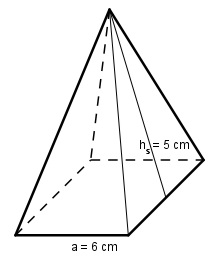
Aufgabe 182
Ein Kegel hat eine Mantellinie s von 10 cm und einen Grundkreisradius r von 6 cm. Wie groß ist sein Volumen V?
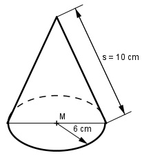
V = cm3Aufgabe 183
Eine quadratische Pyramide hat eine Seitenhöhe hs von 4 cm und eine Grundseite a von 3 cm. Wie groß ist ihre Oberfläche O?
Aufgabe 184
Eine quadratische Pyramide hat eine Höhe h von 4 cm und eine Grundseite a von 12 cm. Wie groß ist ihre Oberfläche O?
O = cm2Aufgabe 185
Ein Kegel hat eine Mantellinie s von 3 cm und einen Grundkreisradius r von 2 cm. Wie groß ist seine Oberfläche O?
Aufgabe 186
Ein Kegel hat eine Höhe h von 28 cm und einen
Grundkreisradius r von
12 cm.
Wie groß ist seine Oberfläche O?
Aufgabe 187
Eine quadratische Pyramide hat eine Mantelfläche M von 78,4 cm2 und eine Grundseite a von 5,6 cm. Wie groß ist ihr Volumen V?
Aufgabe 188
Eine quadratische Pyramide hat eine Mantelfläche M von 209,1 cm2 und eine Seitenhöhe hs von 12,3 cm. Wie groß ist ihr Volumen V?
V = cm3Aufgabe 189
Eine quadratische Pyramide hat eine Grundseite a von 9,4 cm und eine Oberfläche O von 291,4 cm2. Wie groß ist ihr Volumen V?
Aufgabe 190
Eine quadratische Pyramide hat eine Mantelfläche M von 434 cm2 und eine Oberfläche O von 783 cm2. Wie groß ist ihr Volumen V?
V = cm3Aufgabe 191
Wie groß ist das Volumen des dargestellten Körpers?
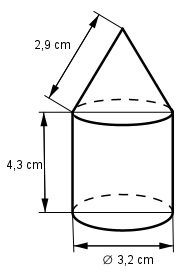
V = cm3Aufgabe 192
Wie groß ist das Volumen des dargestellten Körpers?
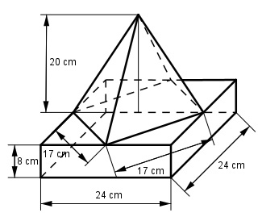
Aufgabe 193
Wie groß ist das Volumen des dargestellten Körpers?
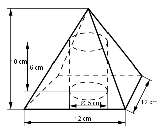
V = cm3Aufgabe 194
Wie groß ist das Volumen des dargestellten Körpers?
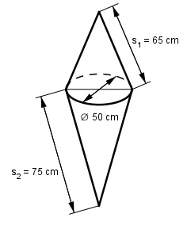
Aufgabe 195
Wie groß ist die Oberfläche O des dargestellten Körpers?
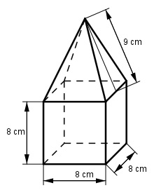
O = cm2Aufgabe 196
Wie groß ist die Oberfläche O des dargestellten Körpers?
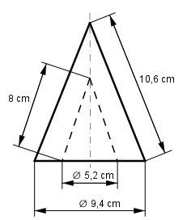
Aufgabe 197
Wie groß ist die Oberfläche O des dargestellten Körpers?
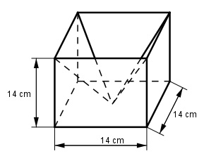
O = cm2Aufgabe 198
Wie groß ist die Oberfläche O des dargestellten Körpers?
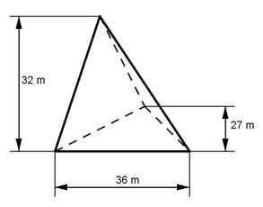
Aufgabe 199
Wie groß ist das Volumen V des dargestellten Körpers?
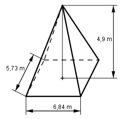
V = m3Aufgabe 200
Wie groß ist das Volumen V des dargestellten Körpers?
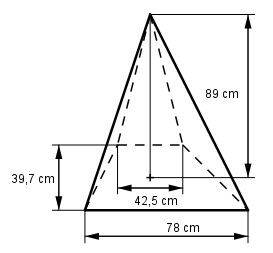
Aufgabe 201
Ein Kegel hat ein Volumen von 804,248 cm3. Wie groß sind seine Höhe h und sein Grundkreis- radius r, wenn sie sich wie 3:2 verhalten?
r = cmAufgabe 202
Von einer quadratischen Pyramide wird in halber Höhe die Spitze abgeschnitten. Wie groß ist der Abfall in Prozent?
Aufgabe 203
Die Mantelfläche M eines Kegels mit dem Grundkreisradiusr = 6 cm ist doppelt so groß wie seine Grundfläche G. Wie groß ist seine Höhe h?
h = cmAufgabe 204
Eine Pyramide ist 5 cm hoch und hat als Grund- fläche ein gleichschenkliges Trapez mit den parallelen Seiten a = 5 cm, c = 3 cm und der Länge eines Schenkels c = 1,5 cm. Wie groß ist ihr Volumen V?
Aufgabe 205
Die Grundfläche und das Volumen eines Zylinders und eines Kegels seien gleich groß. Wie groß ist die Höhe hz des Zylinders, wenn der Kegel eine Hohe hk = 6 cm hat?
hz = cmAufgabe 206
Ein Zylinder hat als Achsenschnitt ein Quadrat mit einer Seitenlänge von 4,5 cm. Welches Volumen V hat der größtmögliche Kegel, der daraus hergestellt werden kann?
Aufgabe 207
Ein gerader Kegel wird parallel zu seinem Grund- kreis so geschnitten, dass sein Volumen halbiert wird. Wie hängen der Grundkreisradius r1 und der Radius der Schnittfläche r2 voneinander ab?
r2 = * r1Aufgabe 208
Aus einem Kegel mit einem Grundkreisradius r = 4,9 cm und einer Höhe h von 13,2 cm soll die größte quadratische Pyramide gleicher Höhe gefertigt werden. Wie groß ist der Abfall A?
Aufgabe 209
Der Achsenschnitt eines Kegels ist ein gleich- schenkliges Dreieck mit einer Höhe h von 3 cm und der Länge l einesSchenkels von 5 cm. Wie groß sind das Volumen V und die Mantelfläche M des Kegels?
V = cm3Aufgabe 210
Ein Hohlzylinder hat einen Innenradius von 1 cm,
einen Außenradius von
3 cm und eine Höhe von
5 cm. Wie groß sind die Höhen eines volumen-
gleichen Kegels, wenn dessen Grundkreisradius
Aufgabe 211
Wie groß ist das Volumen des Rotationskörpers, wenn a + b = 12 cm und wenn sich a:b wie b:(a + b) verhält?
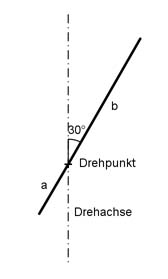
V = cm3Aufgabe 212
Wie groß ist die Mantelfläche M einer Pyramide mit einem regelmäßigen Sechseck, Seitenlänge = 6 cm, als Grundfläche und einer Seitenhöhe hs von 10 cm?
Aufgabe 213
Ein Würfel und eine Pyramide haben gleiches Volumen von 1 000 cm3 und gleich große Grundflächen. Wie groß ist die Höhe h der Pyramide?
h = cmAufgabe 214
Wie groß sind die Oberfläche O und das Volumen V eines Oktaeders mit Seitenlängen a von je 4,8 cm?
Aufgabe 215
Aus einer quadratischen Pyramide mit einer Grundseite a von 6 cm und einer Höhe h von 8 cm wird ein Würfel abgetrennt, dessen Grundfläche auf der Pyramidengrundfläche liegt und 4 Ecken auf den Pyramidenseitenkanten. Wie groß sind eine Würfelseite b und der Abfall A?
b = cmAufgabe 216
das Volumen V und die Mantelfläche M der quadratischen Pyramide? Wie groß ist ihre neue Höhe h, wenn man die Grundfläche beibehält, aber das Volumen um 1/5 verringert?
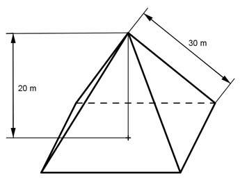
zurück